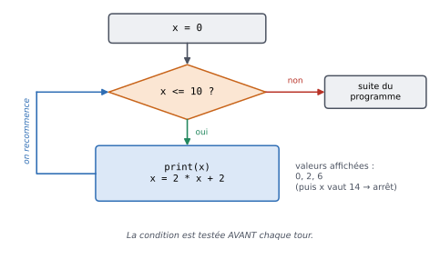
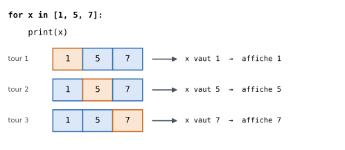
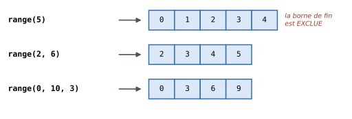

3. Les boucles#
Objectifs du chapitre
À la fin de ce chapitre, vous saurez :
répéter des instructions tant qu’une condition est vraie (boucle
while) ;répéter des instructions pour chaque élément d’une liste (boucle
for) ;générer des suites d’entiers avec
range;utiliser des variables « accumulateurs » (somme, compteur…) ;
suivre l’exécution d’une boucle à la main, avec un tableau de suivi.
Prérequis : chapitres 1 et 2. Durée indicative : 2h.
Imaginons que l’on veuille afficher les nombres de 1 à 100.
Écrire cent fois print serait fastidieux… et un programme qui doit traiter un million de données ne peut évidemment pas être écrit ainsi.
Les boucles permettent de répéter une série d’instructions autant de fois que nécessaire.
Il existe en Python deux types de boucles :
la boucle
while, qui répète des instructions **tant qu’**une condition est vraie ;la boucle
for, qui répète des instructions pour chaque valeur d’une séquence (par exemple une liste).
3.1. La boucle while#
3.1.1. Syntaxe#
La boucle while (« tant que » en anglais) a une syntaxe très proche de celle du if :
x = 0
while x <= 10:
print(x)
x = 2 * x + 2
print("Fin de la boucle, x vaut", x)
0
2
6
Fin de la boucle, x vaut 14
Son fonctionnement est le suivant :
on teste la condition (
x <= 10) ;si elle est vraie, on exécute le bloc indenté (le corps de la boucle), puis on revient à l’étape 1 ;
si elle est fausse, on passe à la suite du programme, après la boucle.


Fig. 3.1 Fonctionnement de la boucle while de l’exemple ci-dessus.#
3.1.2. Suivre une boucle à la main : le tableau de suivi#
Pour comprendre (ou vérifier) ce que fait une boucle, une technique très efficace consiste à dresser un tableau de suivi : une ligne par tour de boucle, une colonne par variable. Pour l’exemple précédent :
Moment |
|
Condition |
Affichage |
|---|---|---|---|
avant la boucle |
0 |
vraie |
|
après le tour 1 |
2 |
vraie |
|
après le tour 2 |
6 |
vraie |
|
après le tour 3 |
14 |
fausse → sortie |
À la sortie de la boucle, x vaut 14.
Prenez l’habitude de faire ce type de tableau sur papier lorsqu’une boucle ne fait pas ce que vous attendez : c’est exactement ce que fait Python Tutor pour vous.
3.1.3. Attention aux boucles infinies#
Si la condition d’une boucle while ne devient jamais fausse, la boucle ne s’arrête jamais :
x = 2
y = 0
while x > 0:
y = y - 1
print(y)
print("Si on arrive ici, on a fini")
Ici, x vaut 2 et n’est jamais modifiée dans la boucle : la condition x > 0 reste vraie pour toujours et le programme affiche -1, -2, -3… sans fin.
À retenir
Dans une boucle while, le corps de la boucle doit modifier au moins une des variables de la condition, de façon à ce que celle-ci finisse par devenir fausse.
Si votre programme semble « bloqué », il est probablement pris dans une boucle infinie : interrompez-le avec la combinaison de touches Ctrl + C (ou le bouton Stop de Thonny).
Testez-vous
Qu’affiche le programme suivant ? Construisez le tableau de suivi.
n = 1
while n < 20:
n = n * 3
print(n)
Réponse
Moment |
|
|
|---|---|---|
avant la boucle |
1 |
vraie |
après le tour 1 |
3 |
vraie |
après le tour 2 |
9 |
vraie |
après le tour 3 |
27 |
fausse → sortie |
Le programme affiche 27 (une seule fois, puisque le print est après la boucle).
Remarquez que la valeur finale dépasse 20 : la condition n’est testée qu’au début de chaque tour.
3.2. La boucle for#
3.2.1. Parcourir une liste#
Le second type de boucle utilise une liste, c’est-à-dire une suite ordonnée de valeurs écrites entre crochets et séparées par des virgules (nous étudierons les listes en détail au chapitre 5).
La boucle for exécute son corps une fois pour chaque élément de la liste :
for x in [1, 5, 7]:
print(x)
print("Fin de la boucle")
1
5
7
Fin de la boucle
À chaque tour, la variable x (appelée variable de boucle) prend successivement pour valeur chacun des éléments de la liste, dans l’ordre.


Fig. 3.2 À chaque tour de boucle, x prend la valeur de l’élément suivant de la liste.#
Le nom de la variable de boucle est libre, et la liste peut contenir n’importe quel type de valeurs :
for prenom in ["Aude", "Ali", "Chloé"]:
print(f"Bonjour {prenom} !")
Bonjour Aude !
Bonjour Ali !
Bonjour Chloé !
3.2.2. Répéter un nombre donné de fois : range#
Il est très fréquent de vouloir parcourir une suite d’entiers.
C’est le rôle de la fonction range :
for i in range(5):
print(i)
0
1
2
3
4
range peut prendre un, deux ou trois arguments :
range(n)produit les entiers de0àn - 1(soitnvaleurs) ;range(a, b)produit les entiers dea(inclus) àb(exclu) ;range(a, b, pas)produit les entiers deaàb(exclu) en avançant depasà chaque fois.


Fig. 3.3 Les valeurs produites par range dans trois cas. La borne de fin n’est jamais atteinte.#
for i in range(1, 10, 2):
print(i)
1
3
5
7
9
Pour répéter une action n fois, on écrit donc simplement for i in range(n): (même si l’on n’utilise pas la valeur de i) :
for i in range(3):
print("Hip hip hip, hourra !")
Hip hip hip, hourra !
Hip hip hip, hourra !
Hip hip hip, hourra !
Testez-vous
Quelles valeurs sont produites par range(3), range(2, 5), range(10, 0, -3) et range(5, 5) ?
Réponse
range(3): 0, 1, 2 ;range(2, 5): 2, 3, 4 ;range(10, 0, -3): 10, 7, 4, 1 (un pas négatif permet de compter à rebours) ;range(5, 5): aucune valeur ! Une bouclefor i in range(5, 5)ne fait aucun tour.
Pour vérifier, vous pouvez afficher list(range(10, 0, -3)).
Pour info
Si vous avez déjà programmé dans un autre langage, vous avez peut-être l’habitude que les boucles for parcourent des entiers (des indices).
En Python, la boucle for parcourt directement les éléments d’une séquence ; range n’est qu’un cas particulier de séquence.
Nous verrons au chapitre 5 comment parcourir une liste avec ses indices lorsque c’est nécessaire.
3.3. Les accumulateurs#
Une utilisation très courante des boucles consiste à accumuler un résultat au fil des tours : faire une somme, compter des éléments, construire un texte… Le principe est toujours le même :
avant la boucle, on initialise une variable (à 0 pour une somme ou un compteur) ;
dans la boucle, on met à jour cette variable ;
après la boucle, on utilise le résultat.
3.3.1. Exemple guidé : la somme des entiers de 1 à n#
Calculons \(1 + 2 + \dots + n\) pour \(n = 4\) :
n = 4
somme = 0 # 1. initialisation
for i in range(1, n + 1): # i prend les valeurs 1, 2, ..., n
somme = somme + i # 2. mise à jour
print(somme) # 3. utilisation
10
Le tableau de suivi permet de voir comment la somme se construit :
Tour |
|
|
|---|---|---|
(avant) |
– |
0 |
1 |
1 |
1 |
2 |
2 |
3 |
3 |
3 |
6 |
4 |
4 |
10 |
Voir ce code s’exécuter pas à pas dans Python Tutor
Erreur fréquente
Initialiser l’accumulateur dans la boucle : si l’on place
somme = 0à l’intérieur de la boucle, la somme est remise à zéro à chaque tour !Oublier le
+ 1dansrange(1, n + 1):range(1, n)s’arrête àn - 1.Mettre le
printdans la boucle alors qu’on ne veut afficher que le résultat final (ou l’inverse) : vérifiez l’indentation.
3.3.2. Compter#
Pour compter, on ajoute 1 à un compteur à chaque fois qu’une condition est vérifiée.
On combine alors une boucle et un if :
notes = [12, 7, 15, 9, 10, 18]
nb_admis = 0
for note in notes:
if note >= 10:
nb_admis += 1
print(nb_admis, "étudiants admis")
4 étudiants admis
3.4. Quelle boucle choisir ?#
Au début, il peut être difficile de choisir entre for et while.
Voici une règle simple :
si l’on veut parcourir les éléments d’une liste (ou d’une autre collection), ou si l’on connaît à l’avance le nombre de tours, on utilise une boucle
for(avecrangesi besoin) ;si l’on veut répéter une action **tant qu’**une condition est vérifiée, sans savoir à l’avance combien de tours seront nécessaires, on utilise une boucle
while.
Par exemple, « afficher les 10 premiers multiples de 7 » appelle une boucle for, tandis que « combien d’années faut-il pour doubler un capital placé à 3 % ? » appelle une boucle while.
3.5. Boucles imbriquées#
Le corps d’une boucle peut contenir une autre boucle. La boucle intérieure est alors exécutée entièrement à chaque tour de la boucle extérieure :
for i in range(1, 4):
for j in range(1, 4):
print(f"{i} x {j} = {i * j}")
print("---")
1 x 1 = 1
1 x 2 = 2
1 x 3 = 3
---
2 x 1 = 2
2 x 2 = 4
2 x 3 = 6
---
3 x 1 = 3
3 x 2 = 6
3 x 3 = 9
---
Ici, la boucle sur j fait 3 tours pour chacun des 3 tours de la boucle sur i : il y a donc 9 affichages de produits en tout.
Pour aller plus loin : interrompre une boucle
L’instruction break permet de sortir immédiatement d’une boucle, et continue de passer directement au tour suivant.
Elles sont parfois pratiques, mais on peut toujours s’en passer, et un code sans break est souvent plus facile à relire.
Dans ce document, nous ne les utiliserons pas.
Si vous venez de R ou de SAS
range(a, b)exclut la borneb:range(1, 4)produit 1, 2, 3, alors que1:4en R produit 1, 2, 3, 4.Comme en R, on évite les boucles explicites pour traiter des données : avec
numpyetpandas, les calculs sur des colonnes entières sont « vectorisés » (chapitres 10 à 12). Les boucles restent utiles pour tout le reste (parcourir des fichiers, répéter une simulation, construire un résultat…).En SAS, l’étape DATA « boucle » implicitement sur les observations ; en Python, rien de tel : les instructions sont exécutées une fois, sauf boucle explicite.
3.6. Exercices#
Exercice 3.1 : Nombres impairs ★
Écrivez une boucle permettant d’afficher tous les nombres impairs strictement inférieurs à une valeur n initialement fixée.
Proposez deux versions : l’une utilisant l’opérateur %, l’autre non.
Indice
Version 1 : parcourez tous les entiers de 0 à n - 1 et n’affichez que ceux pour lesquels i % 2 != 0.
Version 2 : les nombres impairs sont 1, 3, 5… : utilisez le troisième argument de range.
Solution
Version avec une boucle
foret le modulo :
n = 20
for i in range(n):
if i % 2 != 0:
print(i)
Version sans modulo, avec un pas de 2 :
n = 20
for i in range(1, n, 2):
print(i)
On peut aussi utiliser une boucle
while:
n = 20
i = 1
while i < n:
print(i)
i += 2
Exercice 3.2 : Table de multiplication ★
Écrivez un programme qui affiche la table de multiplication d’un nombre n (de n x 1 à n x 10), sous la forme :
7 x 1 = 7
7 x 2 = 14
...
7 x 10 = 70
Solution
n = 7
for i in range(1, 11):
print(f"{n} x {i} = {n * i}")
Exercice 3.3 : Somme des carrés ★
Calculez et affichez la somme \(1^2 + 2^2 + \dots + n^2\) pour une valeur de n donnée.
Pour n = 10, vous devez obtenir 385.
Indice
Inspirez-vous de l’exemple guidé sur la somme des entiers : seule la quantité ajoutée à chaque tour change.
Solution
n = 10
somme = 0
for i in range(1, n + 1):
somme += i ** 2
print(somme)
Exercice 3.4 : Factorielle ★★
La factorielle d’un entier \(n\), notée \(n!\), est le produit \(1 \times 2 \times \dots \times n\) (et par convention \(0! = 1\)).
Écrivez un programme qui calcule et affiche \(n!\) pour une valeur de n donnée. Vous devez obtenir \(5! = 120\) et \(0! = 1\).
Indice
C’est un accumulateur, mais pour un produit. Quelle doit être la valeur initiale ? (Que se passerait-il si on l’initialisait à 0 ?)
Solution
n = 5
produit = 1 # et non 0 : 0 multiplié par n'importe quoi donne 0 !
for i in range(1, n + 1):
produit *= i
print(f"{n}! = {produit}")
Pour n = 0, range(1, 1) est vide : la boucle ne fait aucun tour et le résultat vaut bien 1.
Exercice 3.5 : Doubler son capital ★★
On place 1000 € sur un compte rémunéré à 3 % par an (chaque année, le capital est multiplié par 1,03). Écrivez un programme qui calcule le nombre d’années nécessaires pour que le capital dépasse 2000 €, et affiche ce nombre ainsi que le capital final (arrondi au centime).
Indice
On ne sait pas à l’avance combien d’années il faudra : c’est une boucle while.
Il vous faut deux variables qui évoluent à chaque tour : le capital et le nombre d’années écoulées (un compteur).
Solution
capital = 1000
taux = 0.03
annees = 0
while capital <= 2000:
capital = capital * (1 + taux)
annees += 1
print(f"Il faut {annees} ans ; le capital vaut alors {capital:.2f} euros")
On obtient 24 ans, pour un capital de 2032,79 €.
Exercice 3.6 : Suite récurrente ★★
Écrivez un programme qui affiche tous les termes plus petits que 1000 de la suite \((u_n)\) définie par :
Indice
Il suffit d’une variable u qui vaut d’abord 2, et que l’on remplace par son carré à chaque tour, tant qu’elle est inférieure à 1000.
Solution
u = 2
while u < 1000:
print(u)
u = u ** 2
Le programme affiche 2, 4, 16 et 256 (le terme suivant, 65536, dépasse 1000).
Exercice 3.7 : Triangle d’étoiles ★★
Écrivez un programme qui affiche un triangle de n lignes, la ligne numéro i contenant i étoiles. Pour n = 4 :
*
**
***
****
Puis, en bonus, affichez le même triangle aligné à droite.
Indice
Rappelez-vous que l’opérateur * permet de répéter une chaîne de caractères : "*" * 3 vaut "***".
Pour le bonus, chaque ligne commence par un certain nombre d’espaces : combien, en fonction de n et i ?
Solution
n = 4
for i in range(1, n + 1):
print("*" * i)
# Bonus : aligné à droite
for i in range(1, n + 1):
print(" " * (n - i) + "*" * i)
Sans utiliser la répétition de chaînes, on peut aussi utiliser deux boucles imbriquées et l’argument end de print (que nous verrons au chapitre suivant) :
n = 4
for i in range(1, n + 1):
for j in range(i):
print("*", end="")
print() # passe à la ligne
Exercice 3.8 : Nombre premier ★★★
Un nombre entier \(n \geq 2\) est premier s’il n’est divisible que par 1 et par lui-même (2, 3, 5, 7, 11, 13… sont premiers ; 9 = 3 × 3 ne l’est pas).
Écrivez un programme qui affiche si l’entier n est premier.
Indice
Comptez le nombre de diviseurs de n compris entre 2 et n - 1 (on teste si n % d == 0 pour chaque d).
n est premier si ce nombre vaut 0.
Solution
n = 91
nb_diviseurs = 0
for d in range(2, n):
if n % d == 0:
nb_diviseurs += 1
if n >= 2 and nb_diviseurs == 0:
print(n, "est premier")
else:
print(n, "n'est pas premier")
91 n’est pas premier (91 = 7 × 13), mais 97 l’est.
Pour aller plus loin : on peut s’arrêter dès qu’on a trouvé un diviseur, avec une boucle while, et il suffit de tester les diviseurs d tels que d * d <= n (pourquoi ?).
n = 97
d = 2
while d * d <= n and n % d != 0:
d += 1
# Si on est sorti de la boucle parce que d * d > n, on n'a trouvé aucun diviseur
if n >= 2 and d * d > n:
print(n, "est premier")
else:
print(n, "n'est pas premier")
3.7. Bilan du chapitre#
À retenir
while condition:répète le bloc tant que la condition est vraie ; la condition doit finir par devenir fausse.for element in liste:répète le bloc pour chaque élément de la liste.range(n)produit 0, 1, …, n-1 ;range(a, b)produit a, …, b-1 ;range(a, b, pas)avance depasenpas.Accumulateur : on l’initialise avant la boucle, on le met à jour dans la boucle, on l’utilise après.
En cas de doute, faites un tableau de suivi ou utilisez Python Tutor.
Faites le point : êtes-vous capable de…
écrire une boucle
forqui parcourt une liste ou unrange?prédire les valeurs produites par un
rangeà 1, 2 ou 3 arguments ?écrire une boucle
whilequi s’arrête bien ?calculer une somme, un produit ou un comptage avec un accumulateur ?
dresser le tableau de suivi d’une boucle ?
choisir entre
foretwhilepour un problème donné ?